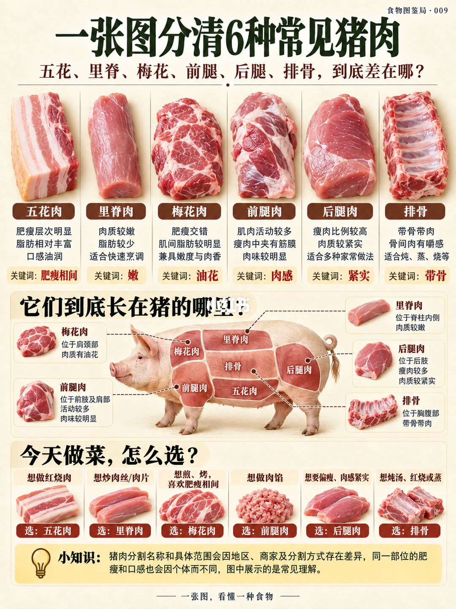

图文实录 · 小红书 · 食物图鉴局
买了这么多年猪肉终于分清了
一张图把六块猪肉按位置和菜对上：五花进红烧，里脊进快炒，梅花看油花，前腿做馅，后腿要瘦和紧，排骨带骨去炖。
1/1
先认位置，再对菜
五花在腹部，肥瘦分层、油脂多，关键词是肥瘦相间，红烧肉选它。里脊沿脊骨内侧，脂肪很少、适合快火，关键词是嫩，用来炒肉丝和肉片。梅花在颈肩，肥瘦交错、能看见油花，适合煎和烤。前腿活动多、瘦肉里有筋膜，肉味重，关键词是肉感，图上把它给肉馅。后腿瘦肉比例高、肉紧，关键词是紧实。排骨是带骨的胸腹段，适合炖汤、红烧和蒸。
页脚写：部位名字和切分边界会因地区、商家和刀法不同；肥瘦也会因猪而异。这张图是常见入门分法，不是某一家肉摊的价目。

汇总
不要只说「瘦一点」
要肥瘦层次买五花，要快炒买里脊，要油花买梅花，要肉馅买前腿，要瘦而紧买后腿，要带骨买排骨。依据都在这一页。不同地方可能把梅花和前腿叫成别的名字，买的时候可以对着位置，不要只对名字。